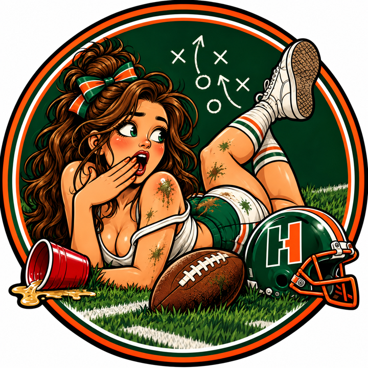
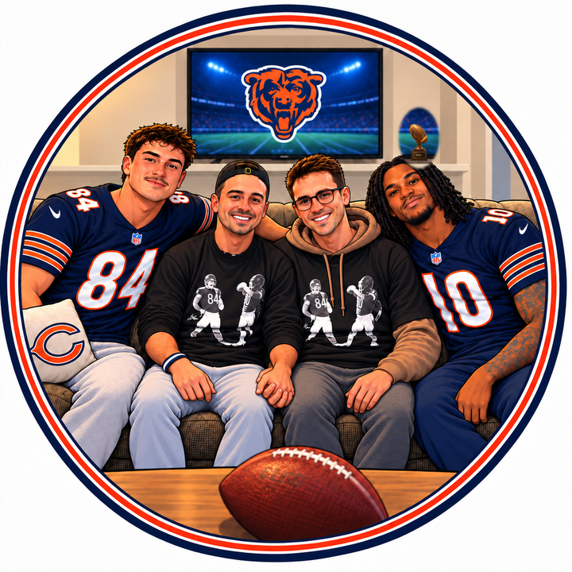

The Dylan Panthers 2–1 vs Dirk's Squad 3–0
Dirk's Squad stayed unbeaten after Brock Purdy threw four touchdowns and Drake London caught nine passes for 194 yards. The Dylan Panthers, ranked first a week ago, lost by three with Michael Wilson's 25 points on the bench. New England Patriots and The Fins Maniacs, the other top-four pairing, meet as well.
-
1▲ 1
 New England Patriots Last week 23–0 · Salois & Yaggy 1st · 408 PF · W 133–108 vs The Mitchell Mishaps
New England Patriots Last week 23–0 · Salois & Yaggy 1st · 408 PF · W 133–108 vs The Mitchell MishapsJaxon Smith-Njigba caught 10 passes for 128 yards and two touchdowns, and Bijan Robinson ran 29 times for 194 yards and two scores. Lamar Jackson added two touchdown passes. They remain unbeaten, alongside Dirk's Squad.
-
2▲ 2Dirk's Squad Last week 43–0 · Holler 1st · 360 PF · W 139–130 vs The Fins Maniacs
Brock Purdy threw four touchdowns, finishing 15 of 27 for 297 yards, and Dirk's Squad stayed unbeaten. Drake London caught nine passes for 194 yards. CeeDee Lamb added seven catches for 112.
-
3▼ 2
 The Dylan Panthers Last week 12–1 · Holler 2nd · 431 PF · L 103–106 vs The Short Bus Crew
The Dylan Panthers Last week 12–1 · Holler 2nd · 431 PF · L 103–106 vs The Short Bus CrewA week after five touchdowns, Josh Allen had two, and the league's highest-scoring roster lost by three. James Cook ran for 154 yards and a score. Michael Wilson's 25 points sat on the bench. Dylan spent $20 each on Meyers and the Ravens.
-
4▼ 1
 The Fins Maniacs Last week 32–1 · Salois & Yaggy 2nd · 372 PF · L 130–139 vs Dirk's Squad
The Fins Maniacs Last week 32–1 · Salois & Yaggy 2nd · 372 PF · L 130–139 vs Dirk's SquadJahmyr Gibbs totaled 164 yards and three touchdowns, 99 rushing and 65 receiving, and it was not enough. The Fins Maniacs lost by nine to Dirk's Squad. Eighty-four points stayed on the bench.
-
5—

The Mitchell Mishaps Last week 51–2 · Salois & Yaggy 3rd · 364 PF · L 108–133 vs New England PatriotsKenneth Walker III was the best of a flat afternoon, and a loss to New England Patriots did not knock The Mitchell Mishaps from fifth. The answer was still the week's largest bid, $32 on Keenan Allen.
-
6▲ 1
 Mia Hamsters Last week 71–2 · Salois & Yaggy 4th · 339 PF · W 136–105 vs Omar Malik / Gooch Canal
Mia Hamsters Last week 71–2 · Salois & Yaggy 4th · 339 PF · W 136–105 vs Omar Malik / Gooch CanalThe first win arrived with Joe Burrow throwing three touchdowns. Ja'Marr Chase caught nine passes for 98 yards and a score, Tee Higgins added one from 28 yards, and Christian McCaffrey ran one in. Harold Fannin Jr. scored twice.
-
7▲ 1The Short Bus Crew Last week 81–2 · Holler 4th · 301 PF · W 106–103 vs The Dylan Panthers
The first win came by three points against the team that had been No. 1. Derrick Henry scored twice on the ground, and Christian Watson caught seven passes for 96 yards and a touchdown. The Short Bus Crew is no longer winless.
-
8▲ 2
 Halloween Greaseheads Last week 101–2 · Holler 5th · 294 PF · W 130–103 vs Team We Are Here
Halloween Greaseheads Last week 101–2 · Holler 5th · 294 PF · W 130–103 vs Team We Are HereSam's first win came with Tyler Shough throwing four touchdown passes, even in a Saints loss. Tee Higgins caught six passes for 90 yards and a score. Halloween Greaseheads were last in these rankings a week ago.
-
9▼ 3

Team We Are Here Last week 61–2 · Holler 3rd · 310 PF · L 103–130 vs Halloween GreaseheadsDavante Adams caught seven passes for 137 yards without a touchdown, and Team We Are Here still posted the week's low score. Garrett Wilson led the starters. On Wednesday both were dealt to Mia Hamsters.
-
10▼ 1
 Omar Malik / Gooch Canal Last week 90–3 · Salois & Yaggy 5th · 289 PF · L 105–136 vs Mia Hamsters
Omar Malik / Gooch Canal Last week 90–3 · Salois & Yaggy 5th · 289 PF · L 105–136 vs Mia HamstersDe'Von Achane tore his left ACL on his third carry, three rushes for 17 yards, and is out for the year. Brock Bowers caught 10 passes for 116 yards and a touchdown. Gooch Canal is 0–3 without the back the roster was built around.